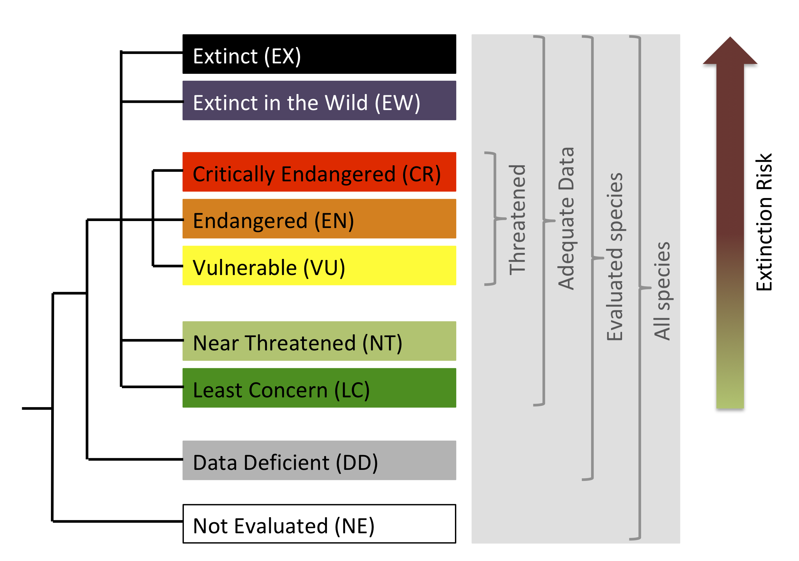

RStudio project
Open the RStudio project that we created in the first session. I recommend to use this RStudio project for the entire course and within the RStudio project create separate R scripts for each session.
# Session 3: Species threat data and save the file in your
folder “scripts” within your project folder, e.g. as
“3_ThreatData.R”The IUCN Red List of threatened species is a useful resource when analysing diversity changes, species range changes and population changes: www.iucnredlist.org (IUCN 2019). It provides information on the global conservation status of species, specifically of animals, fungi and plant species. The IUCN has defined a set of criteria to evaluate the extinction risk of species. According to these criteria, species are classified into nine different categories although strictly only five categories describe the conservation status - from least concern to critically endangered [Fig. 1; IUCN (2012)].

The IUCN distinguishes five criteria that are used to classify species into one of the three threatened categories (Fig. 1; IUCN (2012)):
All of this information (the red list category, the relevant assessment criteria, the population trends, etc.) are provided by the IUCN. We can look at all these information online, e.g. for the Eurasian lynx.
Of course, if you want to analyse your species data in light of these
IUCN assessments, it can become very tedious to look up all information
by hand. The IUCN red list team provides an API for this purpose, and
the R package rredlist is a client to access this IUCN red list API.
It requires an API
key / a token to use the API. You have to indicate your research
objectives for using the API.
We will work with European mammals. The distribution data come from the IUCN range maps from practical 2 that I rasterised to European extent. Course participants can download the data from the moodle page (store in your data folder). For completeness, I show the code below for compiling the data.
# Read in mammal shapefile
mammals <- shapefile('data/MAMMTERR.shp')
# rough European extent
extent_eur <- c(-15,45,35,72)
# Crop SpatialPolygonsDataFrame to European extent
mammals_eur <- crop(mammals, extent_eur)
# Rasterise mammal range maps for European extent
r_mammals_eur <- lets.presab(mammals_eur, resol=1, presence = 1, origin = 1, seasonal = 1)
# Save the PresenceAbsence object
save(extent_eur, r_mammals_eur,file='data/r_mammals_eur.RData')Load the PresenceAbsence object:
load('data/r_mammals_eur.RData')
# Remember how the PresenceAbsence objects look like:
str(r_mammals_eur,2)## List of 3
## $ Presence_and_Absence_Matrix: num [1:1491, 1:293] -14.5 -13.5 -12.5 -11.5 -10.5 -9.5 -8.5 -7.5 -6.5 -5.5 ...
## ..- attr(*, "dimnames")=List of 2
## $ Richness_Raster :## Loading required package: raster## Loading required package: sp## Formal class 'RasterLayer' [package "raster"] with 12 slots
## $ Species_name : chr [1:291] "Acomys cilicicus" "Acomys minous" "Alces alces" "Allactaga elater" ...
## - attr(*, "class")= chr "PresenceAbsence"# Plot the richness raster:
plot(crop(r_mammals_eur$Richness_Raster,extent_eur))For merging the mammal distribution with the red list data, we will need the species names:
# Extract the species names from the PresenceAbsence object
names_mammals_eur <- colnames(r_mammals_eur$Presence_and_Absence_Matrix)[-c(1:2)]Course participants can download the data (mammals_eur_redlist_status.csv and mammals_eur_redlist_threats.csv) in the secured moodle folder (but please be aware that the IUCN terms of use apply!). External readers are advised to generate an API token:
library(rredlist)
# Generate your personal API token
rl_use_iucn()If you have your own IUCN API key, you can easily download the information on species’ red list categories:
# Download red list category for single species using your personal API token "MY_IUCN_REDLIST_KEY"
(rl_search('Lynx lynx', key= MY_IUCN_REDLIST_KEY))## $name
## [1] "Lynx lynx"
##
## $result
## taxonid scientific_name kingdom phylum class order family genus
## 1 12519 Lynx lynx ANIMALIA CHORDATA MAMMALIA CARNIVORA FELIDAE Lynx
## main_common_name authority published_year assessment_date category
## 1 Eurasian Lynx (Linnaeus, 1758) 2015 2014-04-20 LC
## criteria population_trend marine_system freshwater_system terrestrial_system
## 1 NA Stable FALSE FALSE TRUE
## assessor
## 1 Breitenmoser, U., Breitenmoser-Würsten, C., Lanz, T., von Arx, M., Antonevich, A., Bao, W. & Avgan, B.
## reviewer aoo_km2 eoo_km2 elevation_upper
## 1 Nowell, K., Hunter, L. & Mallon, D. NA 42765298 5500
## elevation_lower depth_upper depth_lower errata_flag
## 1 0 NA NA TRUE
## errata_reason
## 1 An errata version of the original assessment has been published to correct the typo "Mmountain Hares" which should read "Mountain Hares".
## amended_flag amended_reason
## 1 NA NA# Download red list categories for all species
redlist_status <- do.call(rbind,lapply(names_mammals_eur,FUN=function(sp){
rl_search(sp, key= MY_IUCN_REDLIST_KEY)$result
}
))Course participants can download the data from moodle and read it in:
redlist_status <- read.table('data/mammals_eur_redlist_status.csv', header=T, sep=';')Here is an example of the kind of information in the table. Compare this to the information given on the IUCN website, e.g. for the Eurasian Lynx.
redlist_status[1:10,10:20]## authority published_year assessment_date category criteria
## 1 Spitzenberger, 1978 2019 2017-05-22 DD <NA>
## 2 Bate, 1906 2019 2017-05-22 DD <NA>
## 3 (Linnaeus, 1758) 2016 2015-09-27 LC <NA>
## 4 (Lichtenstein, 1825) 2016 2016-09-08 LC <NA>
## 5 Thomas, 1881 2019 2019-07-09 LC <NA>
## 6 (Kerr, 1792) 2016 2016-09-08 LC <NA>
## 7 Thomas, 1897 2016 2016-09-09 LC <NA>
## 8 (Pallas, 1777) 2021 2020-08-26 VU C1
## 9 (Pallas, 1771) 2016 2016-09-08 LC <NA>
## 10 Heinrich, 1952 2016 2016-09-09 LC <NA>
## population_trend marine_system freshwater_system terrestrial_system
## 1 Unknown FALSE FALSE TRUE
## 2 Unknown FALSE FALSE TRUE
## 3 Increasing FALSE FALSE TRUE
## 4 Decreasing FALSE FALSE TRUE
## 5 Decreasing FALSE FALSE TRUE
## 6 Decreasing FALSE FALSE TRUE
## 7 Decreasing FALSE FALSE TRUE
## 8 Decreasing FALSE FALSE TRUE
## 9 Stable FALSE FALSE TRUE
## 10 Unknown FALSE FALSE TRUE
## assessor
## 1 Gerrie, R. & Kennerley, R.
## 2 Gerrie, R. & Kennerley, R.
## 3 Hundertmark, K.
## 4 Shenbrot, G., Tsytsulina, K., Batsaikhan, N., Avirmed, D., Tinnin, D., Sukhchuluun, G & Lkhagvasuren, D.
## 5 Dando, T. & Kennerley, R.
## 6 Tsytsulina, K., Formozov, N., Zagorodnyuk, I. & Sheftel, B.
## 7 Eken, G., Bozdogan, M. & Molur, S.
## 8 Cassinello, J., Bounaceur, F., Brito, J.C., Bussière, E., Cuzin, F., Gil-Sánchez, J., Herrera-Sánchez, F. & Wacher, T.
## 9 Kaneko, Y., Kryštufek, B., Zagarondnyuk, I., Vohralík, V., Batsaikhan, N., Avirmed, D. & Sukhchuluun, G.
## 10 Meinig, H.
## reviewer
## 1 Amori, G.
## 2 Amori, G.
## 3 Brook, S.M. & McShea, W.J.
## 4 Amori, G.
## 5 Amori, G.
## 6 Amori, G.
## 7 Amori, G.
## 8 Herrero, J. & Michel, S.
## 9 Amori, G.
## 10 Amori, G.We can now look at how many mammal species are listed in the different red list categories or many species have declining, stable or increasing population trends:
# Conservation status
table(redlist_status$category)##
## CR DD EN LC NT VU
## 7 12 10 213 18 21# Population trends
table(redlist_status$population_trend)##
## Decreasing Increasing Stable Unknown
## 76 8 102 95The IUCN also assesses the main threats per species as you saw in the Eurasian lynx example. The Threat Classification Scheme can be found here.
If you have your own IUCN API key, you can easily download the information on species’ red list threats:
# Download red list threats for single species
rl_threats('Lynx lynx', key= MY_IUCN_REDLIST_KEY)## $name
## [1] "Lynx lynx"
##
## $result
## code title timing
## 1 2.1 Annual & perennial non-timber crops Ongoing
## 2 2.1.2 Small-holder farming Ongoing
## 3 2.1.3 Agro-industry farming Ongoing
## 4 2.2 Wood & pulp plantations Ongoing
## 5 2.2.1 Small-holder plantations Ongoing
## 6 2.2.2 Agro-industry plantations Ongoing
## 7 2.3 Livestock farming & ranching Ongoing
## 8 2.3.1 Nomadic grazing Ongoing
## 9 2.3.2 Small-holder grazing, ranching or farming Ongoing
## 10 2.3.3 Agro-industry grazing, ranching or farming Ongoing
## 11 3.2 Mining & quarrying Ongoing
## 12 4.1 Roads & railroads Ongoing
## 13 5.1 Hunting & trapping terrestrial animals Ongoing
## 14 5.1.1 Intentional use (species is the target) Ongoing
## 15 5.1.2 Unintentional effects (species is not the target) Ongoing
## 16 5.1.3 Persecution/control Ongoing
## 17 5.3 Logging & wood harvesting Ongoing
## 18 5.3.5 Motivation Unknown/Unrecorded Ongoing
## 19 8.1 Invasive non-native/alien species/diseases (Canis familiaris) Ongoing
## 20 8.1.2 Named species (Canis familiaris) Ongoing
## scope severity score invasive
## 1 <NA> <NA> Low Impact: 3 <NA>
## 2 <NA> <NA> Low Impact: 3 <NA>
## 3 <NA> <NA> Low Impact: 3 <NA>
## 4 <NA> <NA> Low Impact: 3 <NA>
## 5 <NA> <NA> Low Impact: 3 <NA>
## 6 <NA> <NA> Low Impact: 3 <NA>
## 7 <NA> <NA> Low Impact: 3 <NA>
## 8 <NA> <NA> Low Impact: 3 <NA>
## 9 <NA> <NA> Low Impact: 3 <NA>
## 10 <NA> <NA> Low Impact: 3 <NA>
## 11 <NA> <NA> Low Impact: 3 <NA>
## 12 <NA> <NA> Low Impact: 3 <NA>
## 13 <NA> <NA> Low Impact: 3 <NA>
## 14 <NA> <NA> Low Impact: 3 <NA>
## 15 <NA> <NA> Low Impact: 3 <NA>
## 16 <NA> <NA> Low Impact: 3 <NA>
## 17 <NA> <NA> Low Impact: 3 <NA>
## 18 <NA> <NA> Low Impact: 3 <NA>
## 19 Minority (<50%) Negligible declines Low Impact: 4 Canis familiaris
## 20 Minority (<50%) Negligible declines Low Impact: 4 Canis familiaris# Download red list threats for all species
redlist_threats <- do.call(rbind,
lapply(seq_len(length(names_mammals_eur)),FUN=function(i){
xi <- rl_threats(names_mammals_eur[i], key= MY_IUCN_REDLIST_KEY);
if(length(xi$result)) {
data.frame(species=names_mammals_eur[i],xi$result)
}
}
))Course participants can download the data from moodle and read it in:
redlist_threats <- read.table('data/mammals_eur_redlist_threats.csv', header=T, sep=';')The threats are ordered hierarchically from broad threat type to very detailed threat, e.g.:
Here is an example of the kind of information in the table. For more details, please have a look at the IUCN website, e.g. the Eurasian lynx example, and at the Threat Classification Scheme.
redlist_threats[sample(nrow(redlist_threats),10),-c(1:2)]## title timing scope
## 1109 Oil & gas drilling Ongoing Minority (<50%)
## 296 Abstraction of ground water (unknown use) Ongoing Majority (50-90%)
## 102 Logging & wood harvesting Ongoing Minority (<50%)
## 967 Diseases of unknown cause Ongoing Majority (50-90%)
## 920 Roads & railroads Ongoing <NA>
## 434 Persecution/control Ongoing Majority (50-90%)
## 75 Named species (Myocastor coypus) Ongoing <NA>
## 48 Housing & urban areas Ongoing <NA>
## 943 Named species (Ovis aries) Ongoing <NA>
## 422 Other impacts Future Whole (>90%)
## severity score invasive
## 1109 Negligible declines Low Impact: 4 <NA>
## 296 Slow, Significant Declines Medium Impact: 6 <NA>
## 102 Slow, Significant Declines Low Impact: 5 <NA>
## 967 Rapid Declines Medium Impact: 7 <NA>
## 920 <NA> Low Impact: 3 <NA>
## 434 Very Rapid Declines High Impact: 8 <NA>
## 75 <NA> Low Impact: 3 Myocastor coypus
## 48 <NA> Low Impact: 3 <NA>
## 943 <NA> Low Impact: 3 Ovis aries
## 422 Unknown Unknown <NA>We can extract many useful information from this table, for example, when specific threats occurred.
table(redlist_threats$timing)##
## Future Ongoing Past, Unlikely to Return
## 35 1106 28Exercise:
Explore the threats table. For example,
Next, we analyse the distribution of threatened species. To do so, we combine the red list status information with the distribution data. Specifically, we extract all species that belong to a specific threat category and then compute the species richness of these species per cell and map this.
For example, we can extract all species that are classified as vulnerable:
(subset(redlist_status,category=='VU')$scientific_name)## [1] "Ammotragus lervia" "Arvicola sapidus"
## [3] "Dinaromys bogdanovi" "Gazella cuvieri"
## [5] "Gazella dorcas" "Gazella subgutturosa"
## [7] "Lepus castroviejoi" "Lepus corsicanus"
## [9] "Mesocricetus auratus" "Miniopterus schreibersii"
## [11] "Myomimus roachi" "Myotis capaccinii"
## [13] "Nyctalus lasiopterus" "Panthera pardus"
## [15] "Plecotus sardus" "Rangifer tarandus"
## [17] "Rhinolophus mehelyi" "Spalax graecus"
## [19] "Spalax zemni" "Ursus maritimus"
## [21] "Vormela peregusna"Using the red list information we can then map spatial hotspots of species wit, meaning the species richness of species falling into this red list category.
library(raster)
# Identify all vulnerable species
vu_spp <- subset(redlist_status,category=='VU')$scientific_name
# Identify all least concern species
lc_spp <- subset(redlist_status,category=='LC')$scientific_name
# Now, we extract the distribution data for the VU and LC species groups, make rasters, stack these and plot
# Calculate species richness
richness_RL_status <- data.frame(r_mammals_eur$Presence_and_Absence_Matrix[,1:2],
richness_vu = rowSums(r_mammals_eur$Presence_and_Absence_Matrix[,vu_spp]),
richness_lc = rowSums(r_mammals_eur$Presence_and_Absence_Matrix[,lc_spp]))
# Make raster and plot
spplot( rasterFromXYZ(richness_RL_status))Exercise:
Map species richness of all species belonging to the threatened categories (CR, EN, VU) and species richness of all species belonging to the non-threatened categories (NT, LC).
We can also analyse the spatial distribution of threats. To do so, we need to extract the species that are affected by a particular threat in a particular time period. Then we can extract the distribution data for these species, compute the species richness and map this in space.
# Which ongoing threats are the most common ?
sort(table(subset(redlist_threats, species %in% names_mammals_eur & timing=='Ongoing')$title), decreasing=T)[1:10]##
## Hunting & trapping terrestrial animals Annual & perennial non-timber crops
## 80 66
## Livestock farming & ranching Intentional use (species is the target)
## 59 48
## Agro-industry farming Logging & wood harvesting
## 40 38
## Persecution/control Scale Unknown/Unrecorded
## 36 35
## Type Unknown/Unrecorded Housing & urban areas
## 35 34# Identify the species experiencing threats from hunting
mammals_threat1 <- subset(redlist_threats,title=="Hunting & trapping terrestrial animals" & species %in% names_mammals_eur)$species
# Identify the species experiencing threats from agriculture, specifically non-timber crops
mammals_threat2 <- subset(redlist_threats,title=="Annual & perennial non-timber crops" & species %in% names_mammals_eur)$species
# Map species experiencing threats from hunting
plot(rasterFromXYZ(
data.frame(
r_mammals_eur$Presence_and_Absence_Matrix[,1:2],
rowSums(r_mammals_eur$Presence_and_Absence_Matrix[,mammals_threat1]))),
main="Hunting & trapping terrestrial animals")# species experiencing threats from agriculture, specifically non-timber crops
plot(rasterFromXYZ(
data.frame(
r_mammals_eur$Presence_and_Absence_Matrix[,1:2],
rowSums(r_mammals_eur$Presence_and_Absence_Matrix[,mammals_threat2]))),
main="Annual & perennial non-timber crops")Exercise:
Interpret.